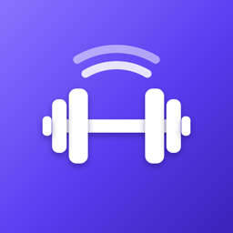

LiftSenseLiftSense is a gym logbook that does the logging for you. Find answers below, or get in touch — every email gets a reply.
Tap a question to see the answer.
No. Without a watch you tick off each set on your iPhone, and everything else — generated workouts, Smart Weights, the rest timer, recovery and reviews — works the same.
With an Apple Watch (watchOS 10 or later), LiftSense can also detect the exercise, count your reps and track your heart rate.
During a workout, your watch reads your wrist movement. When you start a set it shows Detecting…, counts reps, and when you stop it shows its best guesses. Tap the right one and confirm the weight.
Every time you confirm or correct a guess, detection learns your style and gets more accurate.
Tap the correct exercise (or Other…) on the watch — that correction teaches it for next time. If a set wasn't picked up at all, use Log Manually on the watch or tick the set on your phone.
Exercises where your wrist barely moves, like leg press, leg extension and calf raises, are the hardest to detect. Logging those by hand is normal.
Go to Settings → Gyms (or tap Edit equipment on the Generate Workout screen). Start from a template — commercial, garage, home, hotel or bodyweight — then tick or untick each machine and piece of kit.
You can add as many gyms as you like. Generated workouts and exercise swaps only use equipment the selected gym has.
It uses your selected gym's equipment, the muscles you tick, how long you have, the intensity and rest you choose, and which muscles are most recovered.
LiftSense learns from the exercises you keep, finish, swap and remove, so suggestions get more "you" over time. Not happy? Tap Regenerate, or swap single exercises.
Tap the ⋯ button next to the exercise and choose Swap exercise. You'll see the most similar exercises your gym can do, each with a match percentage. Tap one to swap it in, or browse the full library.
For an exercise you've done before, LiftSense starts you with exactly the weights and reps from last time. If you're ready to progress it shows a tip with an Apply button — it never adds weight on its own.
For a new exercise you get a sensible beginner starting weight, which LiftSense refines from how strong you are on your other lifts.
Yes. Changing the weight or reps on a set copies it to every later set of that exercise you haven't finished yet. Sets you've already ticked are left alone.
Tick a set and the rest countdown starts at the bottom of the screen. Use −15, +15 or Skip to adjust it. When it reaches zero your phone (and watch) alerts you that it's time for the next set.
Set your rest when generating a workout, change it any time with the Rest button during a workout, or set the default in Settings → Workouts. To get alerts while your phone is locked, allow notifications for LiftSense in the iPhone Settings app.
Each muscle shows how ready it is to train, from 0 to 100%. It drops after you train that muscle and climbs back as it recovers — larger muscles like quads and back take around three days, smaller ones less. Green is ready, gold is recovering and red is fatigued.
When you finish a workout, LiftSense compares it with your history. You earn a trophy for a heaviest weight, a best estimated one-rep max, your biggest single set, or most reps on a bodyweight exercise. The first time you do an exercise sets your baseline.
Yes, if you allow it. Finished workouts are saved as strength training, and LiftSense can read your heart rate during workouts and your latest body weight. Turn this on or off in Settings → Sync & sharing, or manage permissions in the Health app.
No account is needed. Your workouts, gyms and settings are stored on your iPhone and Apple Watch — they aren't uploaded to us and we can't see them. There are no ads and no tracking. See the Privacy Policy for details.
Ask it about your training — what to train today, how a lift is progressing, how to break a plateau. By default it answers using logic built into the app and nothing leaves your phone.
Optionally, you can add your own Anthropic API key in Settings → AI Coach for full conversations powered by Claude. The app asks your permission before sending anything, and you can turn it off at any time.
Yes. Every feature is included — there's no subscription and no in-app purchases.
Open the Settings tab. You can change your units, name, bodyweight, age, experience level and training goal at any time.
Go to Settings → Reset all data. This permanently removes everything LiftSense has stored on your device. Deleting the app also removes its data. Workouts already saved to Apple Health can be deleted in the Health app.
Still stuck? Email us.
Email jacobbcaesar@gmail.com with your iPhone model, iOS version and (if relevant) your Apple Watch model. Screenshots help too.